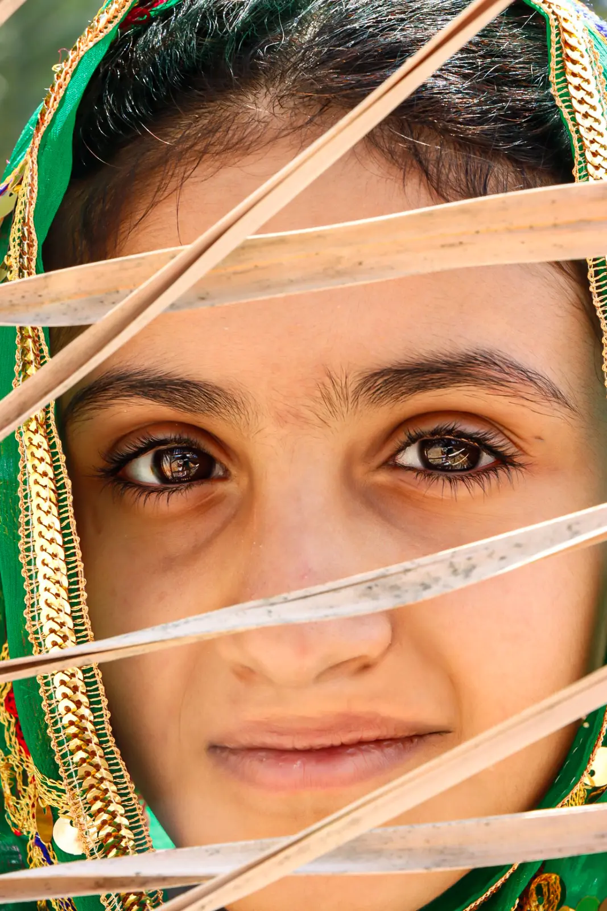

عن المصورة
من خلف العدسة
لا أبحث عن الصورة المثالية،
أبحث عن اللحظة الحقيقية.
أراقب الضوء والتفاصيل الصغيرة والمشاعر التي تمرّ سريعًا، ثم أحفظها في صورة تبقى حاضرة حتى بعد انتهاء اللحظة.

03 — معرض الأعمال
ما يبقى بعد اللحظة
أبحث عن الضوء الذي يمر سريعًا، والتفاصيل التي قد لا يلاحظها الجميع. اختر إطارًا، ودع الصورة تحكي بقيّة القصة.
اضغط على الصورة لعرض التفاصيل
اختر إطارًا لرؤية الحكاية